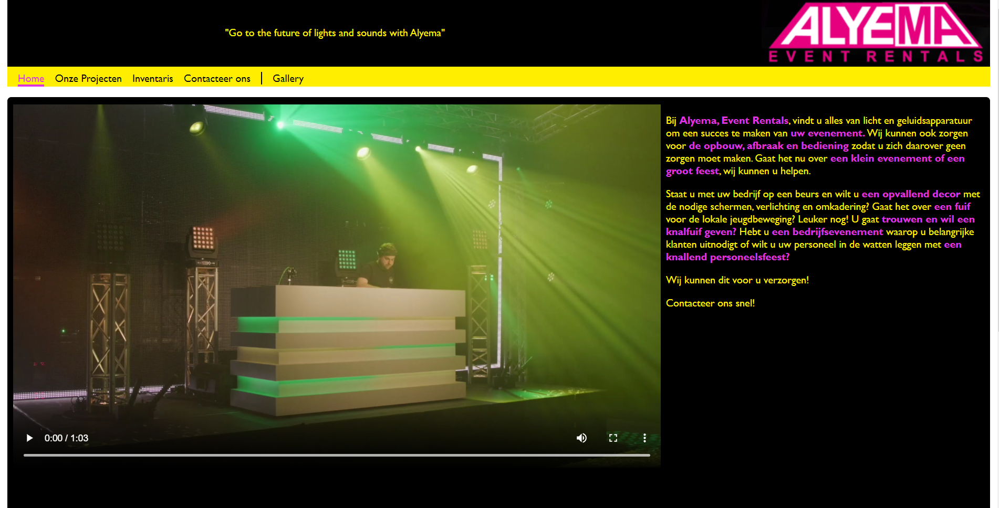
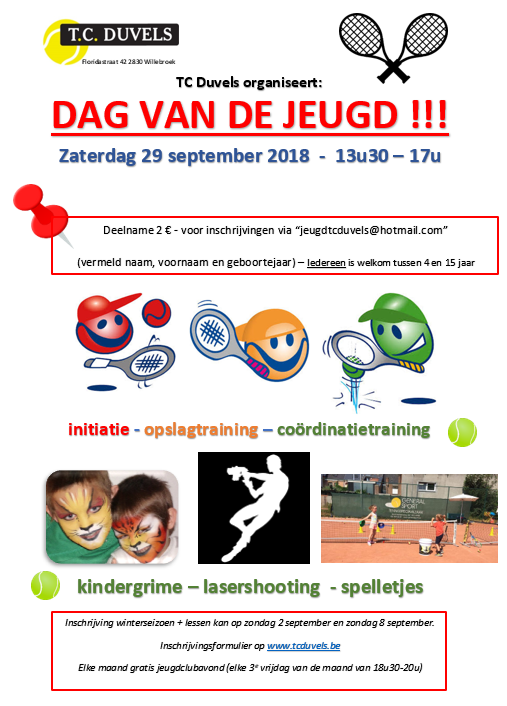
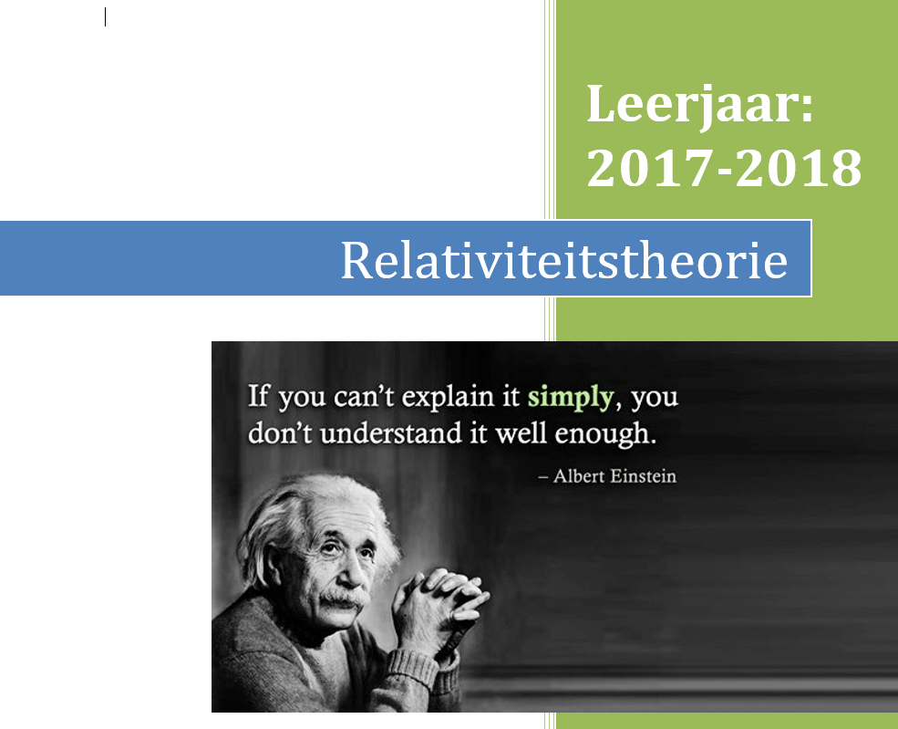
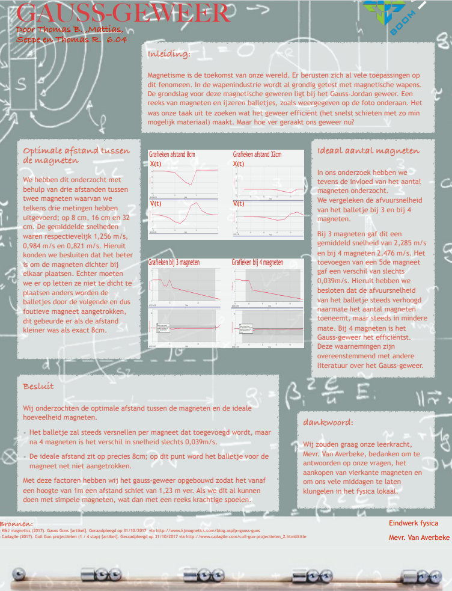

Eigen Website Creatie
Tijdens dit project moesten we de gehele site ontwerpen, dit vroeg dus al veel creativiteit. Daarnaast was er ook een gehele implementatie die erbij kwam kijken. Hiervoor moesten we toch we geavanceerde kennis hebben over HTML en CSS. Ik voelde me wel thuis in dit project, want dit project bracht hetgeen in mij naar boven waar ik het liefste mee bezig ben en dat is creatief coderen.
Jeugddag op eigen club!
Voor de Tennisclub waar ik in speel ben ik aangesteld als Jeugdvoorzitter dit houdt allerlei verschillende taken, waar omtrent het organiseren van de Jeugddag. Dit is een spelletjes namiddag voor alle kinderen die lid zijn bij ons op de club en waar wij dan gedurende heel de dag leuke spelletjes voor voorzien.
Relativiteitstheorie studie
Het laatste jaar op de middelbare school moesten we voor het vak Seminarie-Wiskunde een verslag/studie maken over een grote wiskundige gebeurtenis uit het verleden. Hiervoor koos ik Albert Einstein met zijn relativiteitstheorie. Dit was voor mij een hele interessante studie, want Einstein speculeerde vele dingen zonder zekerheid te hebben en dat bewonderde ik wel aan zijn werk. Het speculeren over wat kon.
Onderzoek Guass-Jordan geweer
Dit project begon als een eindwerktaak voor fysica, maar werd al snel een verslaving om mee bezig te zijn. Samen met 3 mede-studenten deden we onderzoek naar het Guass-Jordan geweer. Dit geweer werkt op basis van magnetisme, het systeem is vrij simpel door de afstoting van magneten word er een kogel versnelt op de loop en steeds als maar sneller.